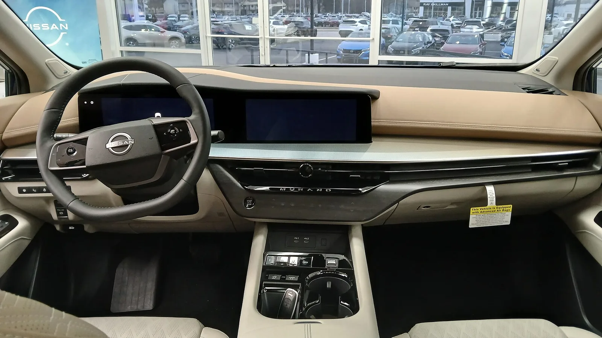
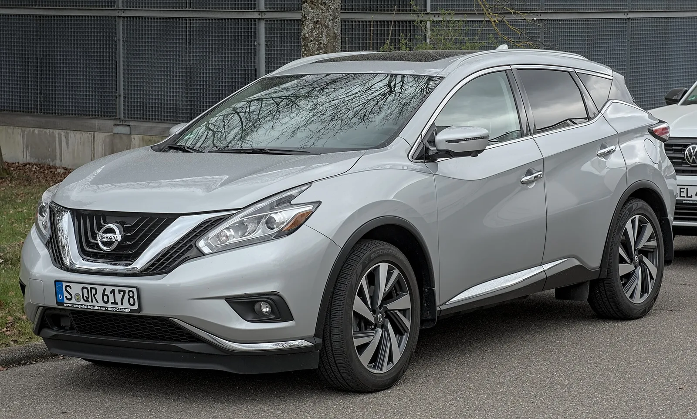
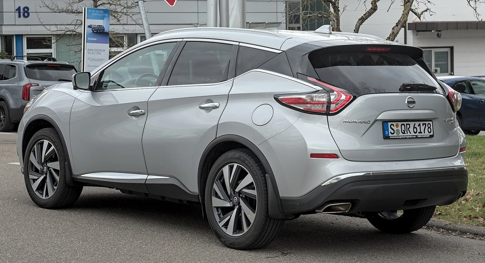

▲ 현행 무라노. 2027년형에서는 가장 저렴한 SV 트림이 사라진다 ⓒ Wikimedia Commons
2027년형 무라노의 시작가가 2,320달러 올랐습니다.
그런데 어떤 트림도 그만큼 값이 오르지는 않았습니다.
가장 저렴한 SV 트림이 사라졌기 때문입니다. 라인업의 아래를 잘라내면, 남은 것 중 가장 싼 것이 새 시작가가 됩니다.
1. 트림별 가격
| 트림 | 가격 | 비고 |
|---|---|---|
| 단종 (2026년형 기준 역산치) | ||
| SL AWD | 43,990달러 | 새 엔트리 |
| 다크 아머 AWD | 46,990달러 | 신규 트림 |
| 플래티넘 AWD | 49,790달러 | 최상위 |
세 트림 모두 사륜구동이 기본입니다. 전륜구동 선택지가 없습니다.
사라진 SV의 값은 표에 직접 나오지 않습니다. 다만 닛산이 밝힌 시작가 인상폭 2,320달러를 새 시작가 4만3,990달러에서 빼면 약 4만1,670달러가 나옵니다. 이 구간을 원하던 구매자는 2,320달러를 더 내거나 다른 차를 봐야 합니다.
2. 트림을 없애는 방식의 가격 인상
제조사가 가격을 올리는 방법은 크게 세 가지입니다.
| 방식 | 소비자 체감 | 표기상 인상률 |
|---|---|---|
| 같은 트림 값 올리기 | 직접적 | 그대로 드러난다 |
| 사양 빼고 값 유지 | 간접적 | 0%로 표기된다 |
| 하위 트림 삭제 | 진입 장벽 상승 | 개별 트림은 0%, 시작가만 오른다 |
세 번째 방식이 이번 무라노입니다. SL·다크 아머·플래티넘 각각의 값이 얼마나 올랐는지는 별개 문제이고, "무라노는 얼마부터인가"라는 질문의 답만 2,320달러 올라갑니다.
제조사 입장에서는 합리적인 선택입니다. 저가 트림은 대당 마진이 낮은데, 판매 대수의 상당 부분을 차지합니다. 이걸 없애면 평균 판매 단가가 올라갑니다. 대신 가장 가격에 민감한 고객층을 놓칩니다.
3. 다크 아머는 무엇인가
| 영역 | 내용 |
|---|---|
| 외장 | 유광 블랙 엠블럼과 외장 액센트, 21인치 휠, 다크 아머 전용 엠블럼 |
| 시트 | 그라파이트 색 천공 프리마텍스, 열선·전동 조절 |
| 정숙성 | 앞 측면 차음 글라스 |
| 편의 | 파노라마 선루프, 다색 앰비언트 LED |
| 인포테인먼트 | 12.3인치 니산커넥트 + 구글 통합 |
| 오디오 | 보스 10스피커 |
| 충전 | Qi2 무선충전 |
다크 아머는 성능 트림이 아니라 외관·편의 패키지입니다. 엔진과 구동계는 다른 트림과 같습니다.
이런 '블랙 패키지' 트림이 최근 늘어나는 이유는 명확합니다. 개발비가 거의 들지 않으면서 가격을 3,000달러 올릴 수 있습니다. 도장·엠블럼·휠 색상만 바꾸면 되기 때문입니다.

▲ 무라노 실내. 다크 아머는 12.3인치 화면과 보스 10스피커를 포함한다
4. 엔진은 그대로다
| 엔진 | 2.0리터 VC-터보 가변압축비 4기통 |
|---|---|
| 출력 | 241마력 |
| 토크 | 260lb-ft (약 35.9kgf·m) |
| 변속기 | 9단 자동 |
| 구동 | 사륜구동 기본 |
| 신규 | 스노 모드 추가 |
VC-터보는 압축비를 주행 상황에 따라 바꾸는 엔진입니다. 저부하에서는 압축비를 높여 효율을, 고부하에서는 낮춰 출력을 확보합니다.
주목할 점은 이전 세대의 V6가 사라진 자리를 이 엔진이 채웠다는 것입니다. 배기량은 절반 이하로 줄었지만 출력은 크게 떨어지지 않았습니다. 다만 고회전에서의 질감은 다릅니다.

▲ 이전 세대 무라노(Z52). V6 엔진을 쓰던 시절의 모델이다
5. 국내에서는 살 수 없다
무라노는 국내에 판매되지 않습니다. 닛산은 2020년 한국 시장에서 철수했습니다.
그럼에도 이 사례를 볼 이유는 트림 개편 방식 자체에 있습니다. 국내 시장에서도 연식변경 때 하위 트림이 사라지거나, 기본 사양이던 항목이 옵션으로 빠지는 일이 반복됩니다.
| 확인 대상 | 왜 봐야 하나 |
|---|---|
| 트림 개수 | 줄었다면 시작가가 올랐을 가능성이 크다 |
| 기본 사양 목록 | 값이 그대로여도 항목이 빠졌을 수 있다 |
| 옵션 패키지 구성 | 단품이던 것이 묶음으로 바뀌면 실구매가가 오른다 |
| 구동 방식 선택지 | 전륜형이 사라지면 그만큼 값이 오른다 |
"가격 동결"이라는 발표가 나올 때 함께 봐야 하는 것이 이 네 가지입니다.

▲ 이전 세대 무라노. 트림 구성은 세대를 거치며 계속 정리돼 왔다
6. 정리
2027년형 무라노에서 엔트리 트림 SV가 사라졌습니다. 그 결과 시작가가 2,320달러 오른 4만3,990달러가 됐습니다. 배송비 1,545달러는 별도입니다.
트림은 SL AWD 43,990 / 다크 아머 AWD 46,990 / 플래티넘 AWD 49,790달러 세 가지이며 모두 사륜구동 기본입니다. 신규 다크 아머는 유광 블랙 외장과 21인치 휠, 12.3인치 화면, 보스 10스피커, Qi2 무선충전을 포함합니다.
엔진은 2.0리터 VC-터보 241마력으로 그대로이고, 스노 모드가 새로 들어갔습니다. 무라노는 국내에 판매되지 않습니다.